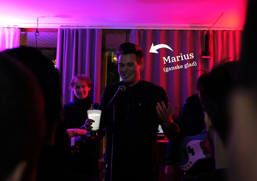

Utvikler hos Variant
Vi vil ha flere varianter som engasjerer og motiverer. Variant er et selskap av og for mennesker med stor læreglede, som styrer sin egen hverdag og som er rause med hverandre. Til felles har vi at vi elsker utfordringer.
Vi tilbyr raushet, rettferdige vilkår, god lønn, samt mulighet til å jobbe på noen skikkelig kule oppdrag sammen med engasjerte kolleger. Vi tar åpenhet til nye høyder og Variant er designet med transparens som et fundament.
Hos oss vil du jobbe med ulike arbeidsoppgaver ut i fra egne ønsker om bransje og teknologi. Vi vet ikke nøyaktig hvilke oppdrag vi får. Det er faktisk slik at din kompetanse og dine ønsker ofte styrer det neste oppdraget. Viktigste for oss er at du har et ønske om å være dyktig. For tiden jobber vi mye med:
- JavaScript (i alle mulige former, som f.eks React og node.js),
- HTML og CSS,
- Docker og Kubernetes,
- C#, .NET Core,
- Skyplattformer (Azure, AWS, Now.sh og Heroku),
- og ikke minst: empati, utviklerkultur og samarbeid.
Så vil vi gjerne jobbe mer med:
- Three.JS og WebGL,
- Design Systems,
- F#, OCaml eller ReasonML,
- React Native og
- Open source-arbeid.
Du vil jobbe ute hos våre kunder. Kundelisten endrer seg stadig, og for tiden bistår vi blant annet disse:
- AKVA group
- Ren Røros
- Statens Vegvesen
- Miljødirektoratet
- Uninett
Akkurat nå hjelper vi noen av våre kunder med blant annet:
- Massiv omveltning til skyplattformer,
- Nyutvikling av web-applikasjoner,
- Å lage en utviklerportal for enklere API-selvtjeneste og
- Analyse av viktige ytelsesforbedringer i tjenestearkitekturer.
Hos oss får du:
- Gode og rettferdige betingelser
- God lønn som er åpen for alle
- Innsikt og påvirkning i alt som skjer
- Vokse faglig og hjelpe andre vokse
Vi har en håndbok for hva du enn måtte lure på. (Pro tip: sjekk ut "Andre goder og ytelser")
Om Variant
Variant er menneskene som jobber her. Vi har kommet sammen for å være med å skape et konsept og en filosofi vi selv tror på. Hverdagen blir mer spennende av å ha et fellesskap som engasjeres av utvikling og hvordan det påvirker hverdagen. Forretningsmodell vår er enkel: Vi tilbyr flinke folk.
Da er det helt selvsagt at vi må investere i kunnskap. Læreglede kommer i mange fasonger og vi prøver å tilrettelegge for at vi som varianter skal lære på den måten vi ønsker. Noen av oss driver podcasts (her og her), noen lager kodevideoer, noen underviser på NTNU og flere-enn-du-tror leder ymse meetups i Trondheim. I tillegg samles vi hver måned til det vi kaller en variantdag; vår egen innedag for faglig påfyll. Og, ikke minst, for å møtes.
Konseptet og filosofien som er beskrevet over har vi behandlet i detalj, foråsidetsånn:
- Åpen og delt kompetansebygging
- Tillitsbasert ledelse: del 1, del 2
- Om lønn
- På tide med bedre jobbintervjuer
Nylig har vi også valgt å open-source både ansettelsesavtaler og oppdragsavtaler. Onboarding står på tur etter det. Se mer på https://github.com/varianter
Uansett hvilken utviklerprofil du assosierer deg med eller teknologi du liker, oppfordrer vi deg til å søke. Spørsmål eller kommentarer? Vår utvikler Marius (mk@variant.no) er rett person å spørre.